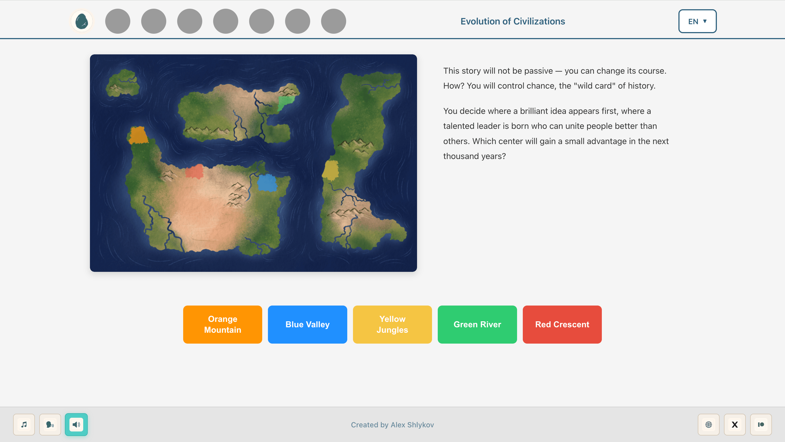
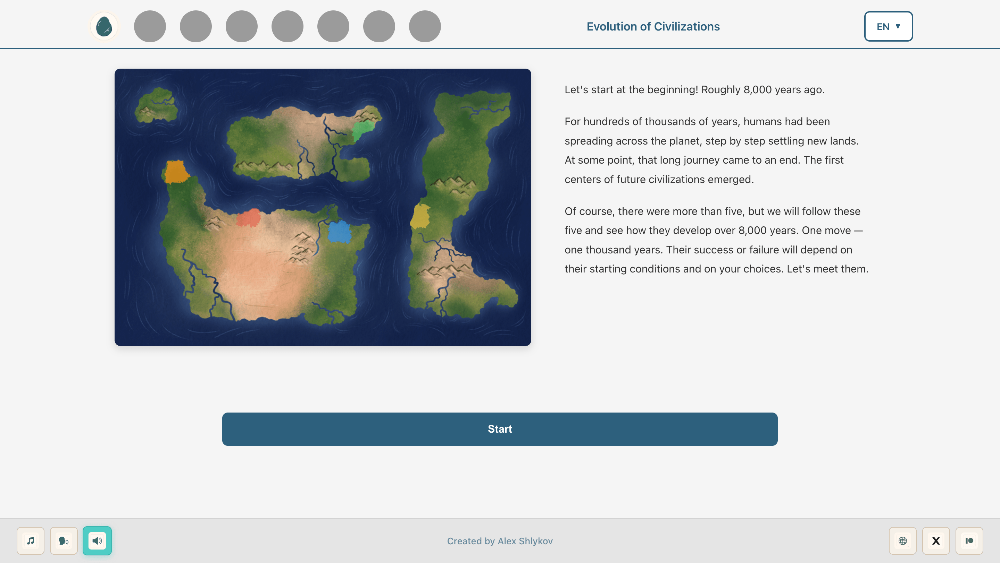
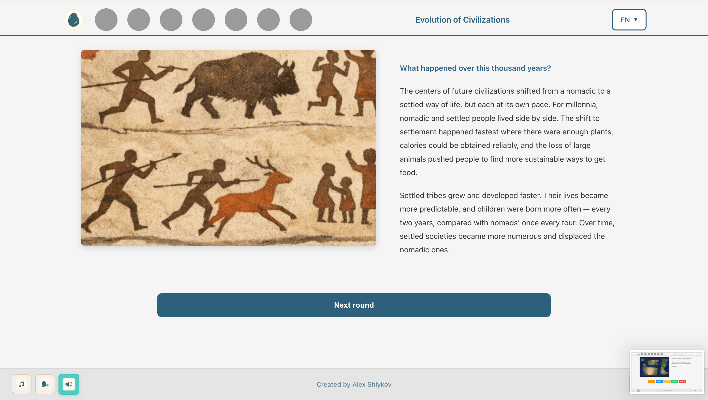
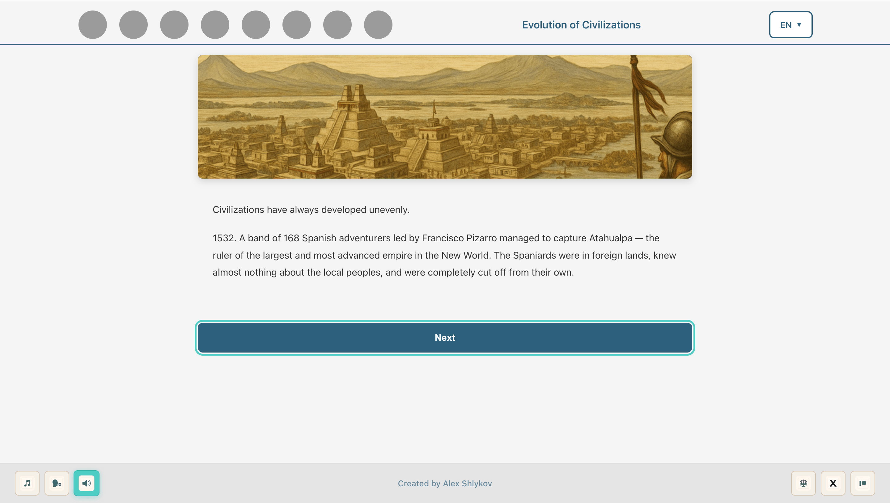
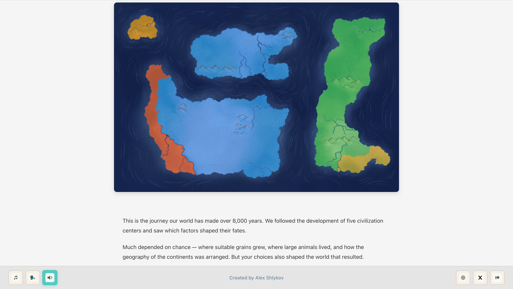
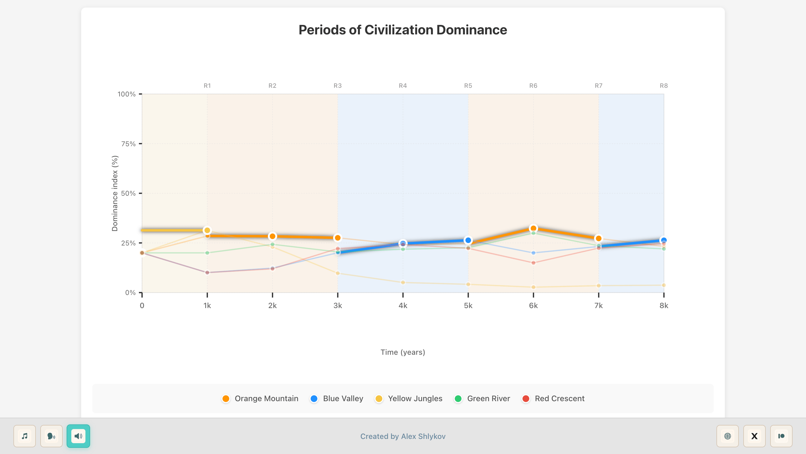
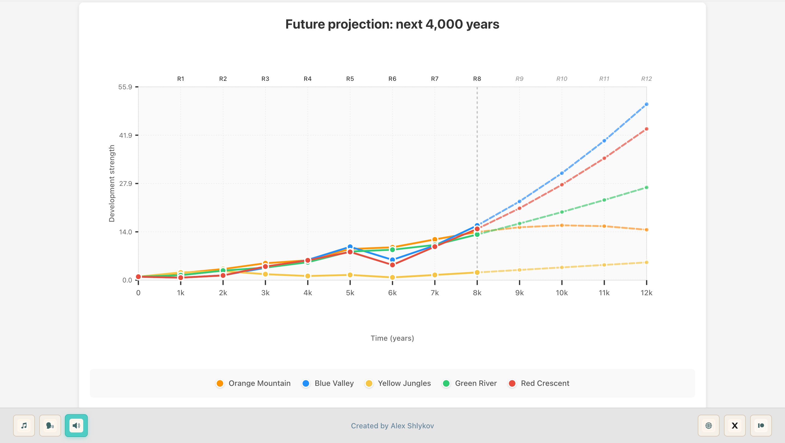

The Evolution of Civilizations
A case study about turning big historical ideas into an interactive longread shaped by choices, systems, and consequences.
Open / Play
Goal
The goal of this project was to translate ideas from Guns, Germs, and Steel book by Jared Diamond into an interactive format.
I wanted to show how civilizations develop, which factors influence that development, and how those factors interact over time.
I did not want to simply retell the book. The goal was to let the player feel the logic through participation — to understand the system by making choices inside it.
Main idea
Instead of presenting history as a fixed sequence of facts, I wanted to make it feel like a chain of pressures, conditions, and trade-offs.

The result changes depending on the player’s choices, so the same longread can end in slightly different ways. That variability helps make the ideas feel more alive.
<World design
I created a different fictional map for the project instead of using recognizable real-world geography.

This helped avoid spoilers about which civilizations historically developed faster or slower. It made the player focus on the factors themselves rather than on what they already know from history.
Structure
The experience is built around a simple rule: one turn = one factor.
The player moves through factors step by step, from the simplest to the more complex ones. This creates a clear learning curve and makes the historical logic easier to follow.

Instead of overwhelming the player with everything at once, the longread introduces one important variable at a time.
Beginning and ending
There is a story at the beginning, and it loops back at the end.
I added this frame to create more immersion and to give the player a reason to care about what is happening. It helps the project feel less like an educational article and more like a journey with a clear arc.

Ending and replayability
The final result does more than show what the player has built so far.
It also suggests how the situation would continue developing based on the player’s earlier decisions. This makes the ending feel more like a consequence than a score screen.


It also improves replayability, because different choices can lead to different developmental paths and different interpretations of the same system.

Why this format mattered
The most important part for me was not accuracy in the sense of retelling every part of the book.
What mattered was creating a compact interactive experience where the player could feel how geography, resources, and other structural conditions can influence the rise of civilizations.
I wanted the logic to be understandable through interaction, not just through explanation.
Tools
- Code: written with Cursor
- Images: ChatGPT
- Music: BrevAI
Try it
Play it once to see one possible path. Then replay and make different choices — that is where the system becomes easier to feel.